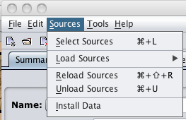

Sources Menu Options

The Sources menu is used to select, load, reload, and unload data sets within PCGen for the use of the user.
The menu options are as follows:
- Select Sources
- Load Sources
- MSRD
- Pathfinder RPG for Game Masters (includes Monsters)
- Pathfinder RPG for Players
- Pathfinder for Players - Advanced
- SRD 3.0 for Players
- SRD 3.5 for Game Masters (includes Monsters)
- SRD 3.5 for Players
- Reload Sources
- Unload Sources
- Install Data